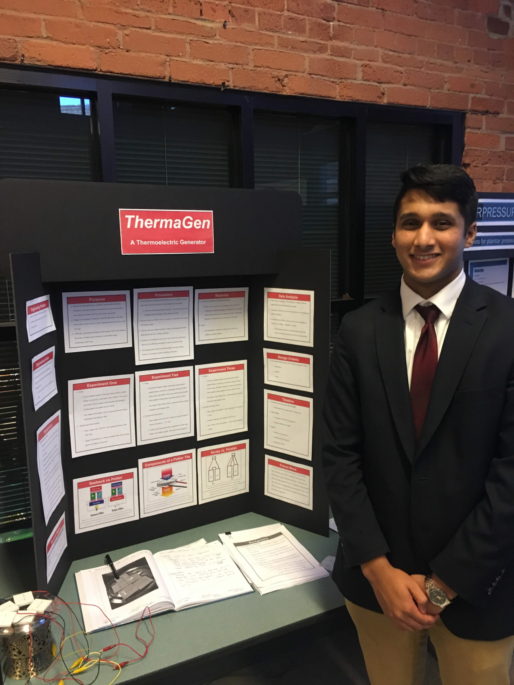

This class is taught primarily by Ms. Curran, with the assistance of our visiting scholar Mr. Barnes. STEM stands for Science Technology Engineering Math. In this class, we spend time working on our independent STEM research projects, to present at our school fair in February. If you exhibit high performance at this fair, you may have the opportunity to move on to higher fairs such as MSSEF at MIT. In this class specifically, we learn techniques for research, data collection and analysis, and more.
According to data from Statista, approximately 62.9 percent of the people in this world owned a mobile phone in 2016. For many, it is important to keep these devices charged regularly. However, individuals may find themselves in situations where they do not have access to an outlet. The goal of this project was to develop an inexpensive, portable, and easy-to-use device which can convert an abundant form of energy into electricity that can be used for the charging of mobile devices. A device known as a Peltier Tile was used as the means of converting thermal energy from the environment into the electricity needed to charge a mobile device. Thermal energy is an abundant and practical source of energy. The apparatus was developed by placing the Peltier Tiles in a series array. The product was tested using simple heating and cooling items (candles/small fires and ice packs respectively), to simulate simplistic and practical applications of the device. The electrical output results were: 4.311 DC volts, 143.10 milliamps, 642.79 watts. This product shows promise as an efficient emergency charger.
One of the primary pieces of preliminary paperwork in anticipation for our projects is what is known as our Research Plans. A Research Plan essentially allows the review board a chance to approve your project. These are also used for assessing the risk of the project, particularly if it is a science or engineering project. Major components of the Research Plan, particularly an engineering one include: the rationale, engineering goals, procedures, materials, risk and safety, data analysis, and lastly, discussion of results and conclusions. To view my Research Plan, please click the heading above.
December Fair is an event that allows MAMS Juniors to display their projects to other advisors and seniors. This is meant to be a time for critique as well as practice for public speaking. We directly present to our own project advisor, some seniors, and potentially others. Although your project is far from complete at that point, you are still expected to have shown substantial work. One of the unique parts of this event is that you are expected to have a full presentation board ready. We assemble these by creating a poster board file, which has requirements that Mr. Ellis generally goes over as we use the same format for his labs. To see my poster file, please click the heading above.
The STEM Thesis is a long document that culminates all of our research and experimentation, along with otehr documentation over the course of the project. If you would like to see my STEM Thesis, click the heading above.
After the February STEM fair, students are almost immediately grouped into teams for STEM II. For STEM II, Mass Academy works with organizations such as Seven Hills to tackle some of the issues that their clients may face. We have four review sessions PDR, CDR, TRR, and ADR where show our progress with building prototypes. My section was the food section and my group, which consisted of Max Enis and Sriya Pidatala, was tasked with creating a rough-surface plate. At first, we thought that the rough surface was a folding, grainy table but we realized at CDR that they more likely meant outdoor picnic tables. This changed our approach from simply using a plate with the high friction material of Dycem to more adapted versions. We ultimately came up with three designs: an unweighted Dycem design, a weighted Dycem design, and a strap design. Check out our poster by clicking the heading above. Look below to see some of our prototypes!